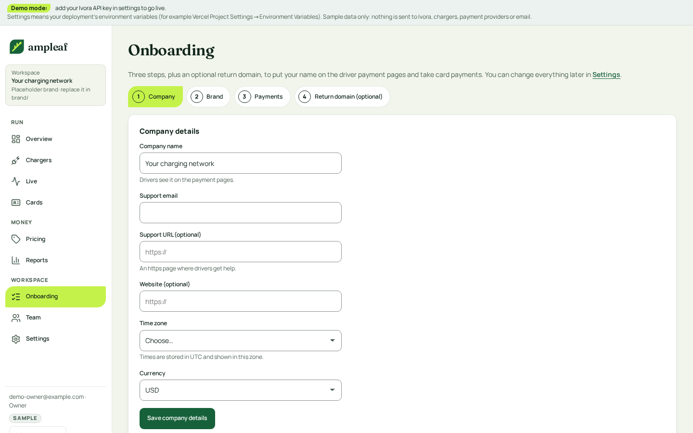

5. Onboarding and Settings
Onboarding and Settings share one layout: a progress strip while setup is incomplete, a section list on the left, one card and one save button per section.

What changes and why
- Progress strip with the next step instead of a separate wizard once the first step is done.
- Sections: Company, Brand (with a contrast check and live preview), Payments (status chip and checklist), Team, Roaming.
- Every form shows Saved with a time; errors are inline text.
- Payments states are chips with words (Done, To do, Waiting).
Follows
- Squid: host setup (connect payments, add property) and its inline status messages.
- Adapted: team and brand sections, which Squid does not have.
Accessibility
- Text pairs are palette v2 pairs already checked at 4.5:1 or more in light and dark (tests/contrast.test.ts); no new pair is introduced.
-
Keyboard order follows the visual order: skip link, navigation,
page header, primary action, then content. Tabs use arrow keys;
table sort heads are buttons with
aria-sort. - Focus: the existing 3 px token ring on every control; tap targets 44 px (36 px on dense table actions, with 44 px on a phone).
- Status is a shape, a word and a colour; charts have a text equivalent.
Brand tokens
- The brand section edits exactly the token set: colours, font choice, logo; preview reads from tokens.
- Contrast check uses the same AA rule as tests/contrast.test.ts.
Build size
M Reorganises existing forms; contrast check and preview are new.
Demo data only. Current screens are the shipped template's own screenshots (docs/screens).